PIXELCRAFT visual quality audit · 2026-11-05T13:39:53+00:00 · method pixelcraft-1.0
Taskboard (PIXELCRAFT sample app)
GITCRAFT/tests/fixtures/pixelcraft/taskboard_fixed
resolved 22 · new 0 · regressions 0 · coverage lost: none · details at the end of the report
Confidence: browser emulation only (no physical-device evidence). Coverage and confidence are separate from quality; nothing is capped or awarded for code existing.
2 · Category scores
| Category | Area | Points | Awarded | Weakest metric | Evidence |
|---|---|---|---|---|---|
| Visual Quality | Spacing and rhythm | 25 | 24.4 | spacing values on a 4-px scale · 89% | measured ×84 |
| Visual Quality | Layout and composition | 25 | 24.6 | layout uses the available width · 82% | measured ×148 |
| Visual Quality | Typography and hierarchy | 20 | 20 | text large enough to read · 100% | measured ×72 |
| Visual Quality | Buttons and controls | 20 | 20 | touch/click targets at least 44 px · 100% | measured ×120 |
| Visual Quality | Visual consistency | 10 | 10 | controls share radii and a small palette · 100% | measured ×48 |
| Usability | Interaction efficiency | 25 | 25 | journeys complete · 100% | measured ×18 |
| Usability | Navigation and discoverability | 20 | 20 | every screen within 2 taps · 100% | measured ×19 |
| Usability | Mobile ergonomics | 25 | 24.7 | main actions within thumb reach · 89% | measured ×89 |
| Usability | Feedback and interaction states | 15 | 14.5 | controls react to hover · 80% | measured ×26 |
| Usability | Accessibility | 15 | 15 | axe-core WCAG 2.2 AA checks · 100% | accessibility ×24, measured ×8 |
| Consistency | Cross-screen consistency | 25 | 20.3 | primary buttons look the same on every screen · 62% | measured ×12 |
| Consistency | Component consistency | 25 | 22 | inputs share one height · 70% | measured ×12 |
| Consistency | Responsive consistency | 20 | 20 | the same content at every size · 100% | measured ×8 |
| Consistency | Design system adherence | 20 | 19.6 | spacing tokens (4-px grid) · 93% | measured ×24 |
| Consistency | State consistency | 10 | 9 | hover treatment applied consistently · 69% | measured ×4 |
3 · Strongest screens
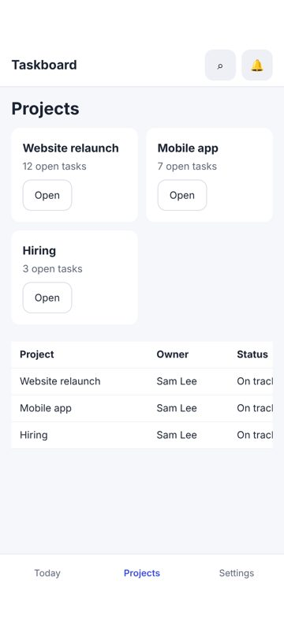
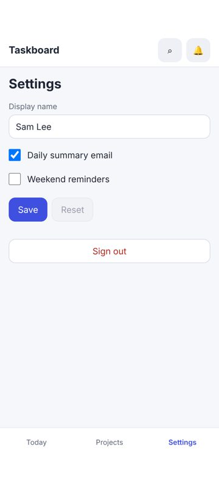
4 · Weakest screens
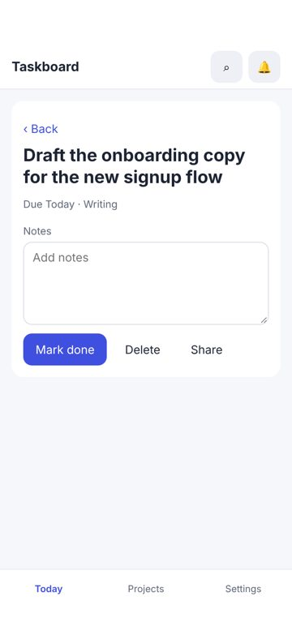
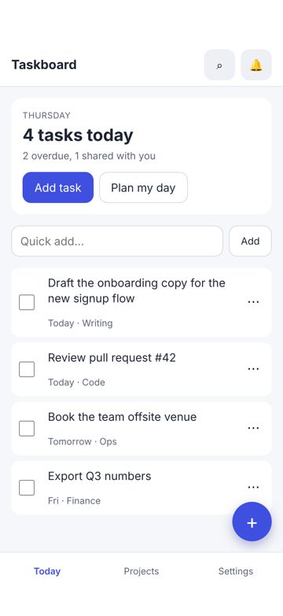
5 · Critical usability defects
None found.
6 · Spacing and layout defects
None found.
7 · Button and control defects
No hover state
minor Measured (rendered DOM)seen 4×next
The pointer over this control changes nothing (colour, shadow, underline), so it does not signal that it is clickable.
Fix: Add a hover style (tone shift, underline, elevation) for every interactive component variant.
Where and what was measured
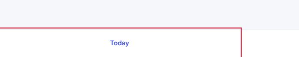
8 · Mobile-specific findings
Main action is at the top of the phone screen
minor Measured (rendered DOM)seen 1×polish
The primary action sits in the top fifth of a tall phone screen, the hardest zone to reach one-handed.
Fix: Repeat or move the main action to the lower half (a bottom action bar or floating button).
Where and what was measured
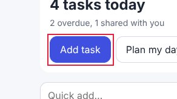
9 · Screenshot gallery
Browser emulation (Playwright + Chromium; iPhone safe areas emulated through CDP). No physical-device evidence was supplied.
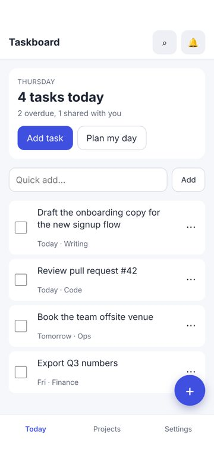
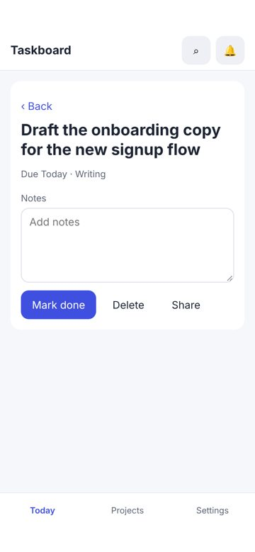
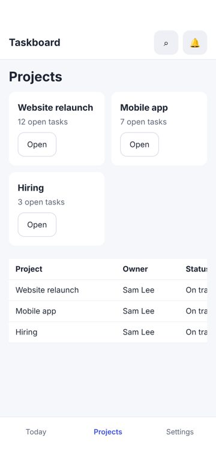
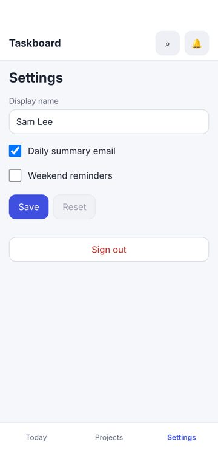
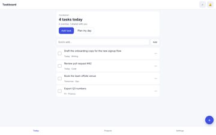
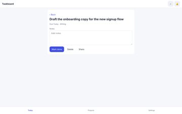
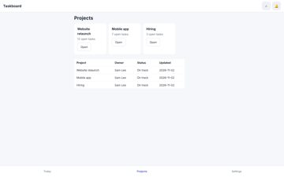
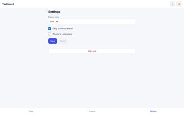
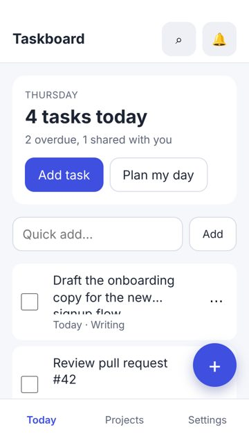
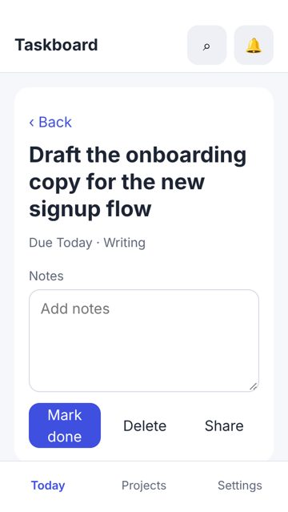
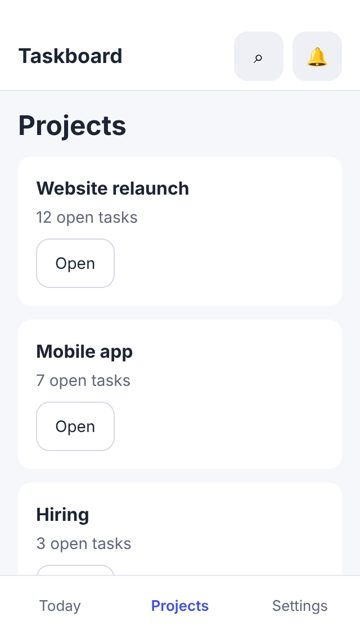
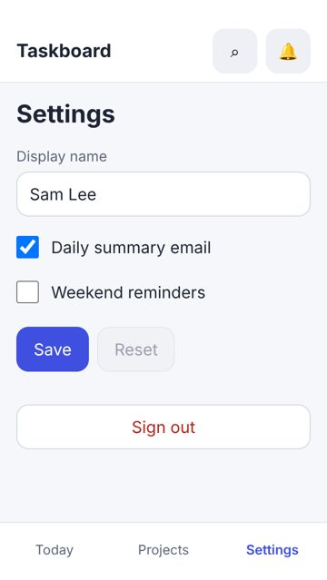
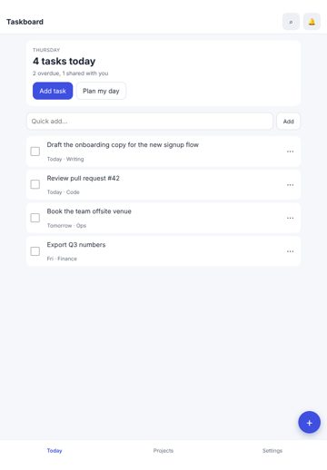
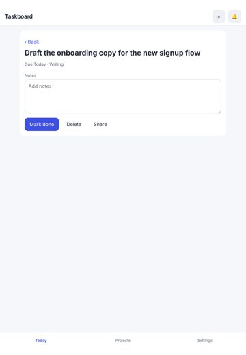
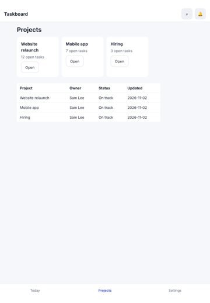
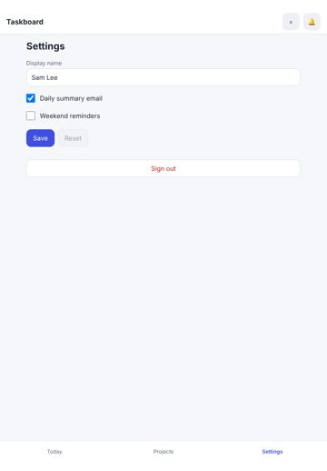
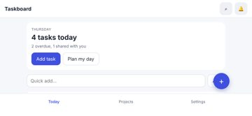
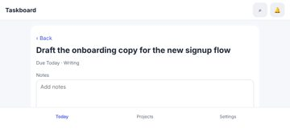
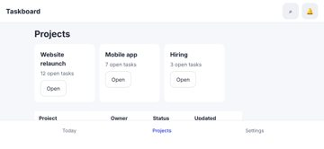
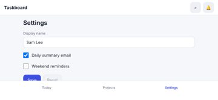
10 · Prioritised improvement plan
| # | Tier | Fix | Severity | Seen | Cost |
|---|---|---|---|---|---|
| 1 | next | No hover state Add a hover style (tone shift, underline, elevation) for every interactive component variant. | minor | 4× | low |
| 2 | polish | Main action is at the top of the phone screen Repeat or move the main action to the lower half (a bottom action bar or floating button). | minor | 1× | medium |
Journeys
| Journey | Viewport | Result | Taps | Confirmations | Feedback ms |
|---|---|---|---|---|---|
| complete a task | iphone17 | ok | 2 / 2 | 0 | 135, 64 |
| quick-add a task | iphone17 | ok | 1 / 1 | 0 | 50 |
| rename myself | iphone17 | ok | 2 / 2 | 0 | 125, 48 |
| complete a task | desktop | ok | 2 / 2 | 0 | 87, 33 |
| quick-add a task | desktop | ok | 1 / 1 | 0 | 44 |
| rename myself | desktop | ok | 2 / 2 | 0 | 141, 37 |
Before / after
Comparable: yes — same method, same screens, viewports and journeys; deltas use only metrics measured in both runs
| Before | After | Δ (same metrics) | |
|---|---|---|---|
| Visual Quality | 71.2 | 99 | +27.8 |
| Usability | 73.7 | 99.3 | +25.6 |
| Consistency | 64.7 | 90.9 | +26.2 |
| Overall | 69.9 | 96.4 | +26.5 |
Resolved 22 · persisting 2 · new 0 · regressions 0 · coverage lost: none
- ✅ Accessibility: Elements must meet minimum color contrast ratio thresholds
- ✅ Controls are too close together
- ✅ Text is too small to read comfortably
- ✅ Touch target is too small
- ✅ Bottom controls sit under the home indicator
- ✅ Focusing a field zooms the page on iPhone
- ✅ Heading levels are visually inverted
- ✅ No pressed (active) state
- ✅ Page scrolls sideways (horizontal overflow)
- ✅ Uneven spacing between related elements
- ✅ Keyboard focus is invisible
- ✅ Spacing does not follow a consistent scale
- ✅ Two primary actions compete
- ✅ The same heading level has different sizes on different screens
- ✅ Disabled control looks enabled
- ✅ Too many button variants
- ✅ Controls stretch across the desktop window
- ✅ Text is truncated
- ✅ Unnecessary confirmation steps
- ✅ A tap produces no visible response
- ✅ Click target is below 24 px
- ✅ A control is covered by another element
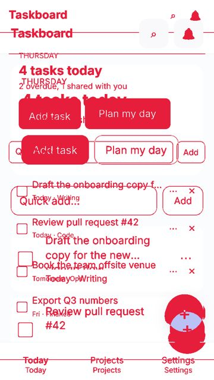
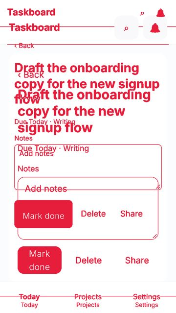
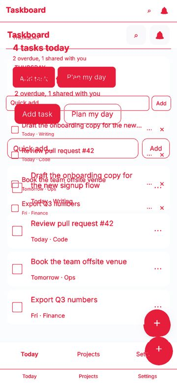
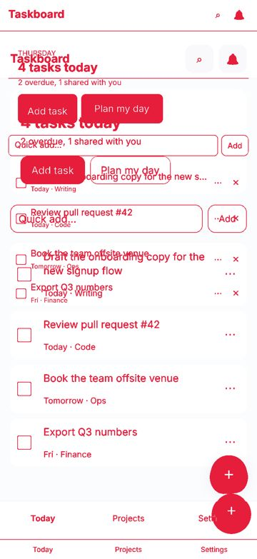
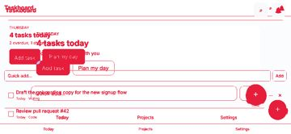
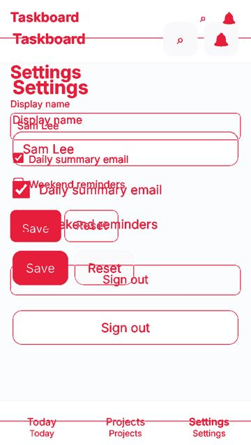
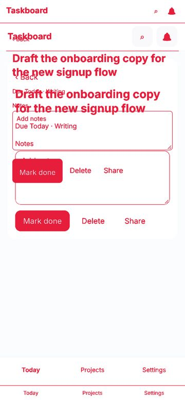
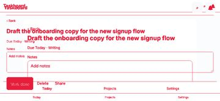
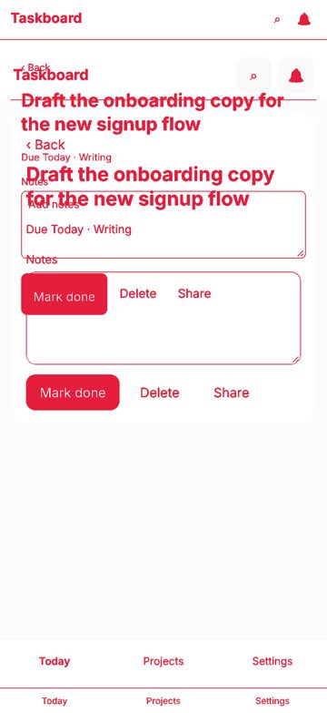
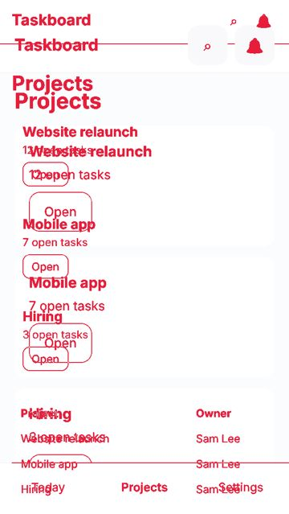
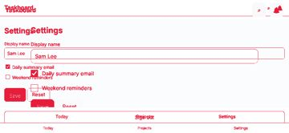
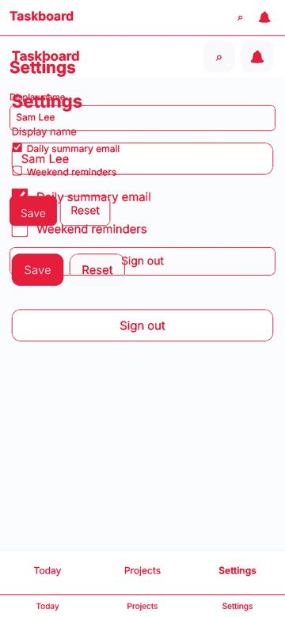
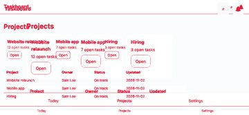
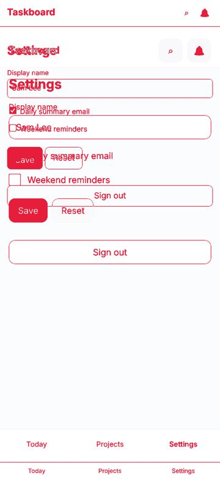
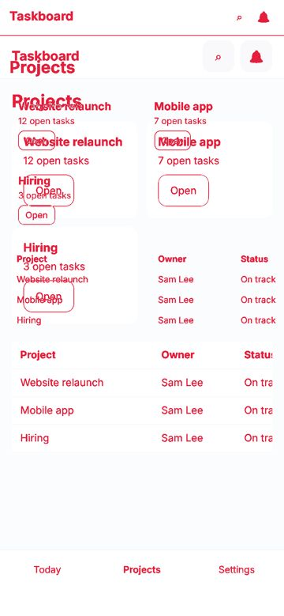
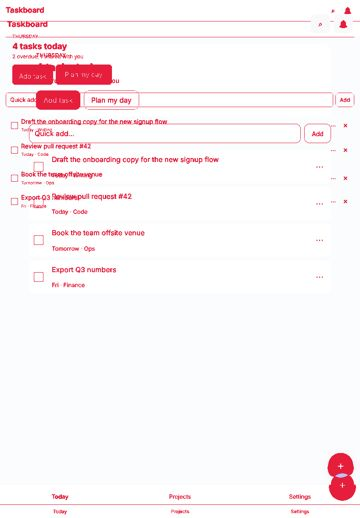
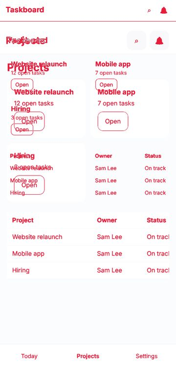
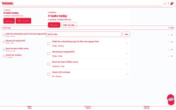
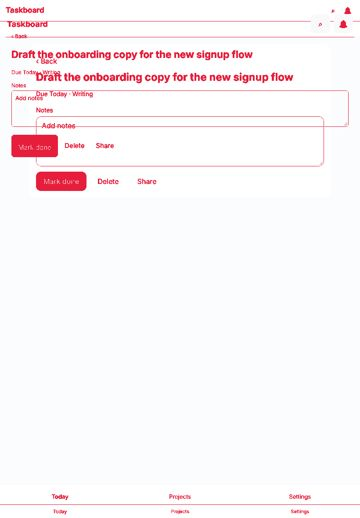
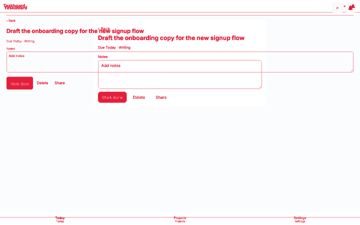
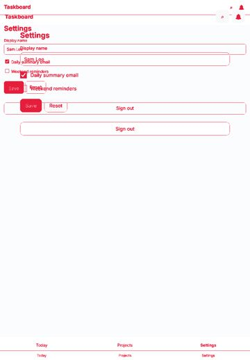
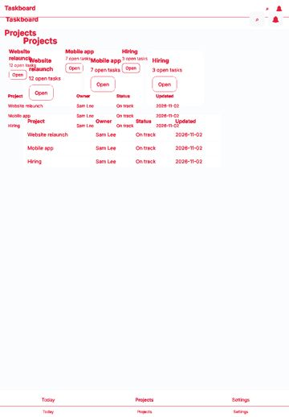
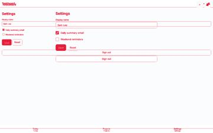
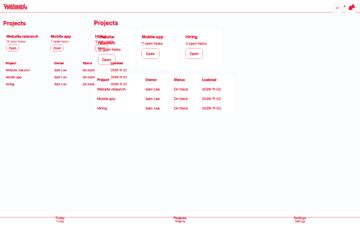
Evidence and limits
- Every viewport is browser emulation (Playwright + Chromium 153.0.8010.12); iPhone sizes are CSS pixels and safe-area insets are emulated through CDP (Emulation.setSafeAreaInsetsOverride). Safari-specific rendering (WebKit), the real on-screen keyboard and physical reach are not reproduced.
- Browser chrome: the first screen is re-measured with the viewport shortened by 120 px (Safari's toolbars); dynamic toolbar collapse is not reproduced.
- Keyboard interference: fields that would zoom on focus (font-size < 16 px) are measured; whether the on-screen keyboard covers a field is not testable in emulation.
- Hover/pressed/focus states are sampled once per visual variant of control; focus visibility comes from real Tab presses (desktop).
- Canvas-drawn interfaces (games): the DOM does not describe what is drawn, so DOM-geometry metrics cover only the HTML overlay (HUD, menus); use judgements for the canvas.
- No physical-device evidence: findings are emulation results, not device results.